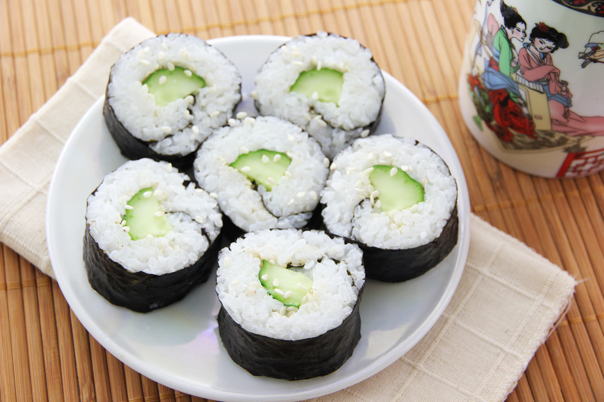

Cucumber Sushi

Description
Junichiro Tanazaki once spoke in his seminal essay "In Praise of Shadows" of the
adaptation of sushi to Japanese aesthetics, the contrast of the pure white rice against
the gloomy blurred light of the traditional Japanese house, and while it may be difficult
to place sushi into this original context, the dish is still an excellent, clear-tasting dish
for lunch, breakfast or snacking. Replacing the traditional raw fish with cucumber reduces the
risk of disease, while adding a satisfying crunch!
Ingredients
- Sushi rice
- Cucumber
- Nori seaweed
- Rice vinegar
- Sugar
Steps
- Wash the rice about three times, gently stirring each time. The water will still be somewhat
cloudy, but take care not to stir too much or else the starch from within the rice will start
to leak out!
- First, steam the rice. This can be done in a normal pot by adding one and a half
as much water as you did rice, then leaving on a simmer for 10 minutes with a
lid on, then leaving with said lid on away from the heat for another 20 minutes
- While the rice is steaming, cut the cucumber diagonally to get thin, long slices (you can julienne it instad if you prefer!)
, then cut these strips into narrower lines
- Once the rice has finished steaming, mix a third of a teaspoon of sugar with two teaspoons of rice vinegar, then mix to make the
dressing. Sprinkle this onto the rice and stir gently to mix.
- Brush your hands with vinegar to avoid sticking, then spread the rice over the nori, leaving about 5cm at each end.
Create a dip in the rice at one end and add the strips of cucumber.
- Add a sprinkling of water to one end of the sushi, and roll it from the other end.
Slice the sushi.